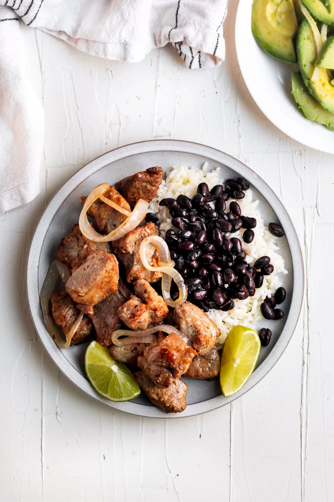

Home
Masita de Puerco

Background
Masita de puerco is a traditional Cuban dish that is made with fried pork chunks, garlic, and spices. The name "masita de puerco" translates to "little pork" in Spanish, which is a reference to the small size of the pork chunks. This dish is typically served with rice, black beans, and plantains, and is a popular meal in many Cuban households.
Ingredients
- 2 lbs pork shoulder, cut into 1-inch cubes
- 1/4 cup sour orange juice
- 1/4 cup olive oil
- 6 cloves garlic, minced
- 1 tsp cumin
- 1 tsp oregano
- 1/2 tsp salt
- 1/4 tsp black pepper
- 1/4 cup lime juice
- 1/4 cup sugar
- 4 cups water
Instructions
- Season the pork with salt, pepper, and garlic powder.
- Heat the olive oil in a large pot over medium-high heat.
- Add the pork and sear on all sides until browned, about 5-7 minutes.
- Remove the pork from the pot and set aside.
- Add the garlic, cumin, oregano, salt, and pepper to the pot and cook until fragrant, about 1 minute.
- Return the pork to the pot and add the sour orange juice, lime juice, sugar, and water.
- Bring the mixture to a boil, then reduce the heat to low and simmer, covered, for 2-3 hours, or until the pork is tender.
- Serve the masita de puerco with rice, black beans, and plantains.